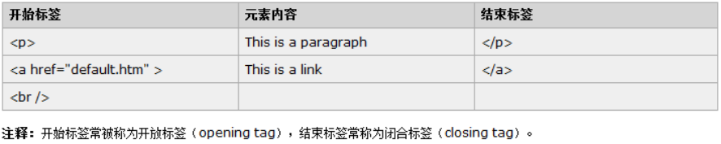
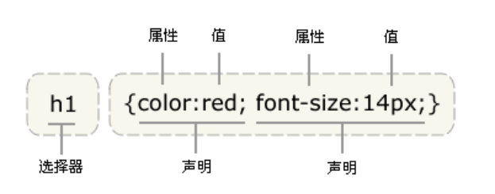
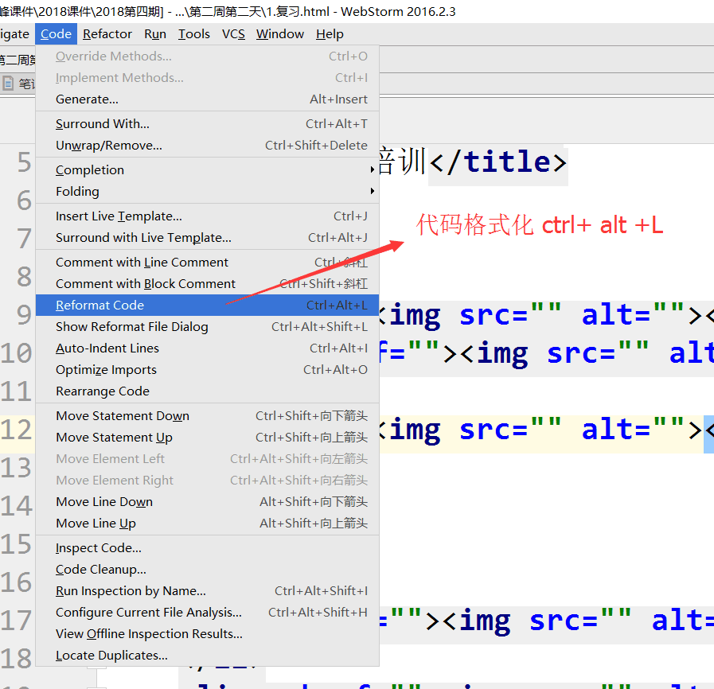
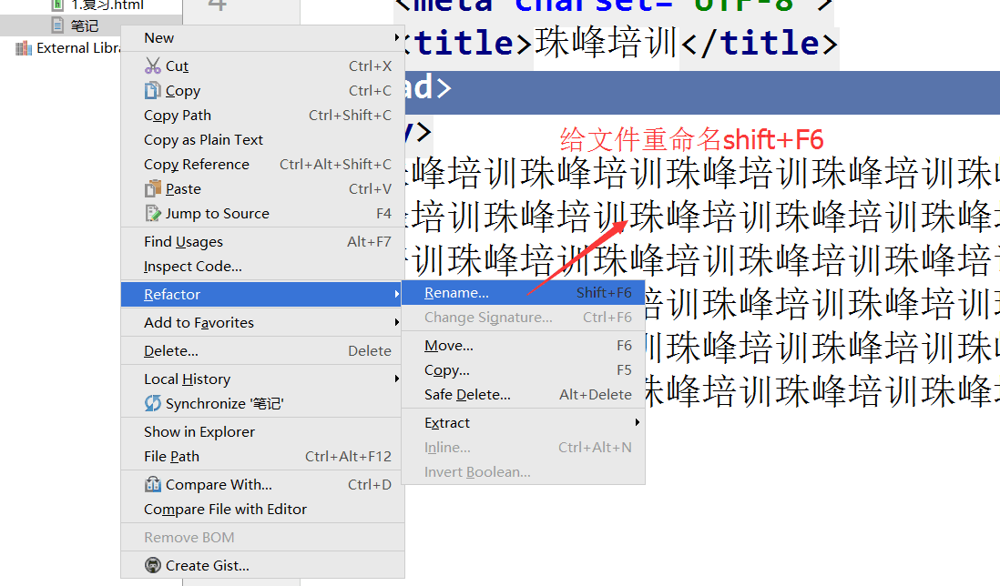
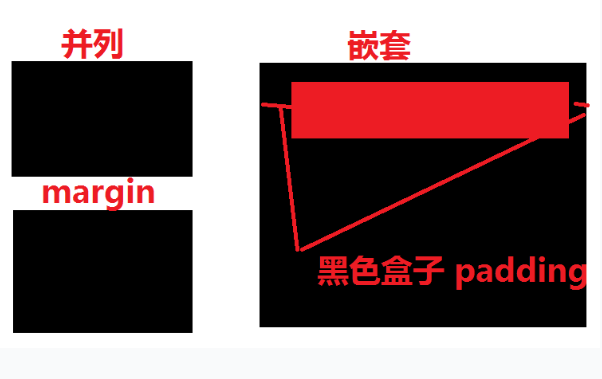

- transition-property 过渡动画的属性名称
width,top...;all代表所有有动画的属性名称；- transition-duration 过渡动画持续的时间。持续时间越长动画越慢，反之动画越快；
- transition-timing-function 过渡动画的运动曲线；默认值 ease 匀速； linear 线性动画；
- transition-delay 过渡动画延迟的时间
简写transition:all 1s ease 1s
- animation-name 动画名称（自定义）
- animation-duration 动画持续的时间，持续时间越长，动画越慢，反之动画越快；
- > - animation-timing-function 动画的运动曲线，默认值ease匀速；
- animation-delay 动画延迟的时间
- animation-interaction-count 动画运动的次数
infinite 无限次运动- animation-direction 动画运动的方向
第一步: 指明关键帧动画的名称
0%{} from 开始帧
100%{} to 结束帧
第二步: 用animation属性调用关键帧动画的名称
<p></p><div></div><br /> 标签一般小写，闭合标签一定要有结束标签,空标签没有结束标签,不要手动去添加闭合标签属性名/属性值的形式出现,多个属性名属性值之间用空格隔开;比如:name="value"开始标签中,标签名后面的内容;
<img src='' alt = '' title ='' /> 插入图片
src表示的是图片的路径地址;alt表示是图片的文字描述说明，一般在图片路径出错或者请求失败的情况就会出现title表示鼠标移到图片上的文字描述说明
<a href="" target=""></a> 超链接
href表示要链接跳转的路径地址
href = ’ https://www.baidu.com/ ’
href = ‘#’ 没有对应的跳转地址就用#代替
href = ‘javascript:;’ 表示把a的链接跳转行为给禁止掉target = '_blank'表示在新窗口打开我们想要链接跳转的地址target = '_self'表示在当前窗口打开我们想要链接跳转的地址，默认值

元素的内容是开始标签与结束标签之间的内容 块级元素 div ul ol / li h1-h6 p
- 天生自带属性display: block
- 独占一行；
- 排列方式: 从上到下垂直排列
- 可以设置宽高以及盒子模型的其他属性(width/height/margin/padding/border)属性
- 如果块级元素不设置宽高，宽度会继承他父级元素的宽度，高度是本身内容的高度;
行内元素 a b strong img span em i
- 天生自带属性display: inline
- 不独占一行;
- 排列方式: 从左到右依次排列，超出父级元素的大小会自动折行
- 设置宽度属性不起作用，宽高是本身内容的大小；要宽度起作用就需要转化为具有块级元素的特征
display:block- 设置内外边距的左右起作用，但是上下不起作用
display:block；- 如果行内元素不设置宽高，宽高是本身内容的大小;
常用的标签元素html4版本常见的标签元素http://www.zhufengpeixun.com/qianduanjishuziliao/qianduanCSSziliao/2016-06-29/456.html
http://www.w3school.com.cn/html/index.asp HTM4
http://www.w3school.com.cn/html5/index.asp HTML5

1.行内式
<开始标签名 style = "属性名: 属性值; 属性名: 属性值"></结束标签名>2.内嵌式
<style>
选择器{ 属性名：属性值 ； 属性名：属性值}
</style>3.外链式（实际项目中最常用的方式）
<link rel = 'stylesheet' src = 'css文件的路径' />4.导入式
<style>
@import ‘外部的css文件’
</style>
1)含义：层叠样式表，用来美化html标签结构
2）语法：p(backgroud:red;color:#000)
选择器{属性名：属性值：属性名：属性值….}
由多组组属性名跟属性值组成，而且每一组属性名和属性值之间用分号隔开
<p style="background:red"></p>
<style type='text/css'
选择器:{属性名：属性值；属性名：属性值；}
*{
margin:0;
padding:0;
}
</style>
<link rel="stylesheet" href="CSS文件的名称">
1.文字居中
- 文字水平居中: text-align: center；
- 文字垂直居中：height高度和line-height行高的值一样，文字就垂直居中
2.图片/ 块级元素居中
- 水平居中: width宽度 / margin: 0 auto(上下 左右);
- 垂直居中: 定位
ctrl+D 复制整行代码
ctrl+Z 撤销
ctrl+C 复制
ctrl+V 粘贴
shift+enter 快速换行
shift+F6 给文件重命名
ctrl+/ 单行注释（增加/删除）
ctrl+shift+/ 多行注释（增加/删除）
ctrl+alt+L 代码格式化

-HTML：一门标记语言
-CSS 层叠样式表
-JS(javascript)：一门脚本语言
标签是由左右尖括号包起来，中间放标签名；
标签名一般是小写；
一般由开始标签和结束标签组成例如：<div></div>
有的标签只有开始没有结束，在开始标签里自动闭合，这样的标签叫空标签/单标签/自闭合标签例如：<img/><br/><hr/>
div span 用来划分结构
img 插入图片
a 链接跳转标签
ul li 无序列表
ol li 有序列表
h1-h6 标题标签
p 文字段落标签
strong / b 加粗标签
i / em 斜体标签
谷歌浏览器body默认的间距是 8px）text-decoration: none; 去掉a标签的下划线
text-decoration:underline; 增加a标签的下划线
list-style: none; 去掉列表（ul ol/li）默认样式
font-weight: normal; 把粗体变成细体
font-style: normal; 去掉斜体
font-weight: bold; 把默认字体加粗
text-align: center; 用来控制文字水平居中用的
1.是否对元素在浏览器中的大小产生影响
- margin：外边距是不会影响元素显示在浏览器中的实际大小，只是产生了间距；
- padding：内边距会影响元素实际显示在浏览器中的实际大小
padding是算在元素的实际大小里的2.含义：
- margin：外补丁（外边距）▪跟另一个盒子的间距（大部分是并列的两个盒子）
- padding：内补丁（内边距）▪父元素和子元素的间距（大部分是嵌套的两个盒子）

标签默认自带样式
- *{margin:0;padding:0;} 去掉浏览器默认自带的间距
- a{text-decoration:none} 去掉a默认的下划线
- a{text-decoration:underline} 給a添加下划线
- li{list-style:none} 去掉列表默认自带样式
- strong/b/h1-h6{font-weight:normal} 把粗体变成细体
- span{font-weight:bold} 把细体加粗
- em/i{font-style:normal} 把斜体变成正常字体
颜色
- color 字体颜色
- background-color/ background 背景颜色
- #fff / white 白色
- #000 / black 黑色
盒子模型
- width 宽度
- height 高度
- padding 内边距
- border 边框
- margin 外边距
字体样式
- font-size 字体大小
- color 字体颜色
- font-weight 字体粗细
- font-style 字体类型 - 斜体 / 正常字体
- line-height 行高 和 margin / padding 外/内 间距
布局排列方式
- 水平(左右结构) float：left / right
- 垂直(上下结构) display:block